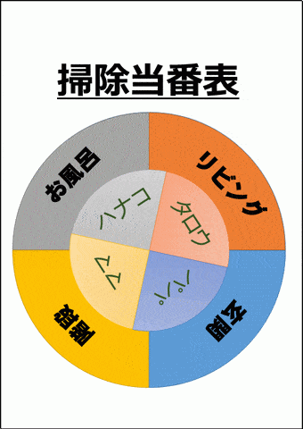
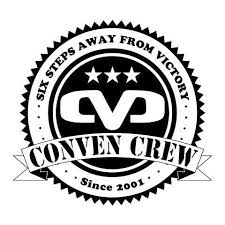
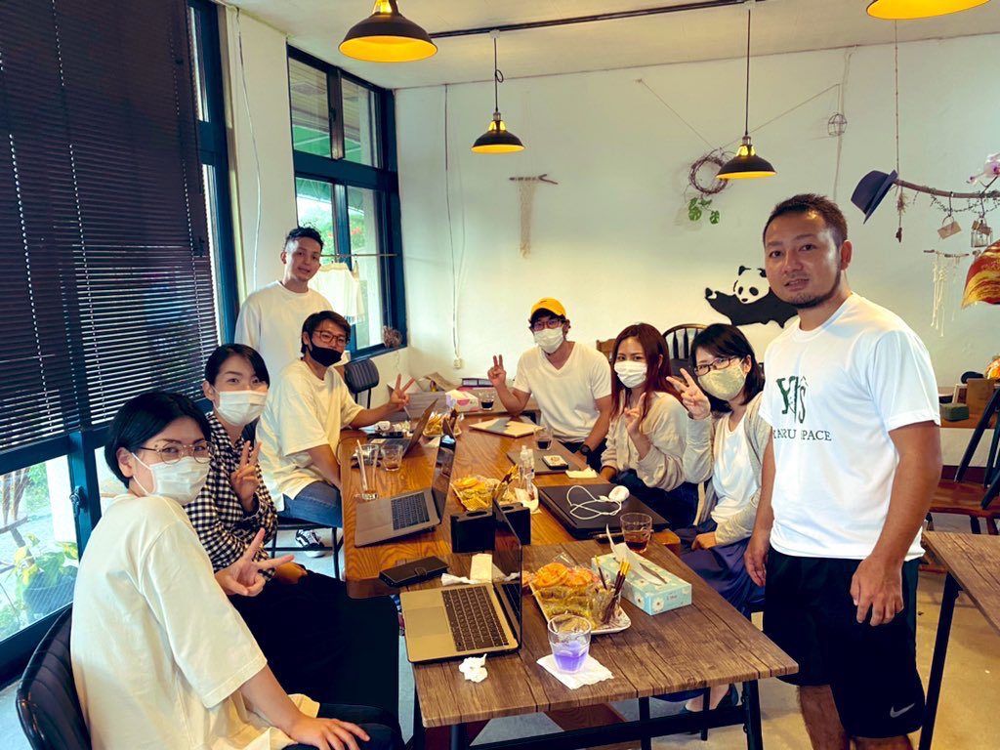
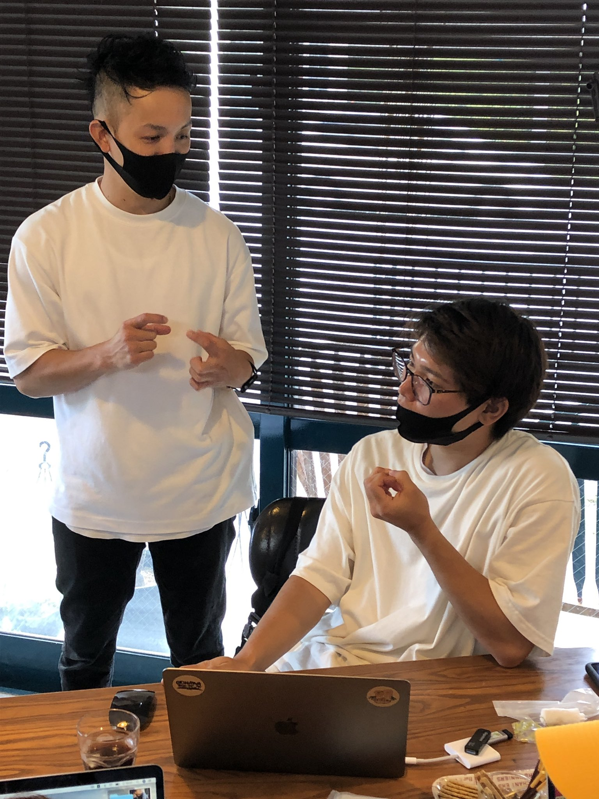

小橋川広弥 Portfolio Site
about me

パーソナル情報
小橋川 広弥（こばしがわ ひろや）
1989年07月21日生まれ / 31歳
経歴
- ・2017年3月 ： 九州近畿短期大学 子ども科 卒業
- ・2017年3月 ： 沖縄中央学園 子ども科 卒業
-
・2017年3月 ： 社会福祉法人ひまわり福祉会 前田さくら保育園 就職
「感情豊かな笑顔溢れる子」を育てたい「子どもの事を第一に考え寄り添う」と園長先生の思いに魅力を感じ入社を決めました。
入社初年度から様々な行事の担当をさせてもらい、自分達で1から構成を考え進行、立案、外部とのやりとり等担当職員間で入念に話し合い 台風などの災害もありましたが職員間でうまく連携をとり無事１２０名以上の園児全員で行う事が出来ました。
「子どもの成長が見れて良かった」、「思い出に残る運動会だった」と保護者から
最高評価を頂きました。
会場の確保や予約、急な予定変更時の円滑な伝達など職員間でうまく意識し進め真剣に課題と向き合い、毎日毎日考えて改善策を閃きました。
常に頭を使い改善策を考える癖、コミニケーション力がこの時身につきました。 - ・現在転職活動中
2020年に学習したプログラミングスキル
5月6日から現在まで1日(3~4時間)も休む事なく継続して学習を続けています
- 5月6日〜 ： HTML,CSS
- 5月27日〜： JavaScript,jQuery
- 5月6日〜 ： Ruby Ruby on Rails
- 10月30日~ ： Vue.js Nuxt.js
※成果物については下記参照ください
どの様な業務をしたいか
多くの人の役にたつ画期的で面白いアプリの開発に携わりたいです。
その為に必要な言語やスキルを常に取り入れていける環境で働きたいです。
どの様なエンジニアになりたいか
前職の保育園を辞めてまでIT企業を志した理由は→
現在保育士をやっていて、業務改善や待機児童問題など様々な課題が見えてきました。
その問題解決は保育士だけでは難しく、IT技術を駆使して（コミニケーションツール、サービス提供（開発など））解決して行けるのではないかと思い、転職を決めた。
子どもたちが好きだからこそその問題を解決し、保育の現場を活性化する。子どもも大人もwinwinな環境を作っていきたい。
「世の中の悩み、多くの人の困ったを解消していきたい。」からです。1.相手の立場になって考える
サービスとは使いたい人がいて成り立つと考えています。 提供するサービスを使ってくださるユーザーの立場になって物事を考え、 実装する事を意識しています。
2.固定概念に捉われない
今までの常識を疑い、常にWHYを考え、固定概念に囚われない改善案を考え、実行したいです。 新しいことにチャレンジすることは刺激的で、そこから自分自分自身が大きく成長していけると考えています。
3.影響力を持つ
私が挑戦の中で得た情報やスキルは、どんどん他者へ提供していこうと考えております。
SNSを使って情報発信したり、技術記事を発信したりと、積極的に実行していきます。それにより1人でも多くの人に影響を与える事ができ、それが僕の志す変化による価値提供に必要な条件だと考えています。
Rails Javascript
Letter_Book
制作したアプリサムネイル

ソースコード
GitHub(Letter_Book)こだわりポイント
- ・アウトプットを兼ねて初めて制作したアプリ
- ・コードを書く前にマインドマップを作成。現場の声を聴きながら、少しずつ改善を加え設計書通りに制作
- ・実際にアプリを作る事で基礎文法の知識の定着が出来たと実感
- ・AWSにアプリをデプロイしています。
- 現在保育士として勤務している中で、保育士の日々の業務の簡素化、もっと保護者と保育士間でもう少し円滑にコンタクト、コミュニケーションが取れないかと考え、業務の1つであるお便り帳アプリを制作しました。実際に現場の職員の話、助言をいただいたりし使っていたただくユーザ目線を考え試行錯誤しなが作成しました。 具体的には、忙しい朝の時間にボタン１クリックで登園の時間を送信(time_zoneを使用）保育園からのお知らせ、配布物も"iframe"を使いwordで資料、手紙等を共有し配布漏れ、印刷物のコスト削減。"googleCalendar"を埋め込む事でアプリ内で年間行事（日時を）知る事ができる。返信を書くのが忙しい保護者ように（イイね機能を応用し、見ました！スタンプを実装）
- ⭐️ 主にRuby on rails ,Javascriptを主に使用しました。 まだまだ作成段階ではありますが、見ていただけると幸いです。 よろしくお願いします。
- #保護者（アプリユーザー）保育士、保育園側（管理者画面を設置し、管理者画面から投稿、データの閲覧が出来ます。）
補足資料
事前に作成したマインドマップ（クリックで拡大します）

使用したGem
- ・gem "bootsnap", ">= 1.4.2"
- ・gem "devise-i18n"
- ・gem "jquery-rails"
- ・gem "activeadmin"
- ・gem "mini_magick""
- ・gem "pry-byebug"
Ruby on Rails
ルーレットアプリ
制作したアプリへのリンク
アプリの概要
- ・お掃除当番（係）を決める
- ・お掃除当番だけではなく、項目＆名前の部分を変更出来汎用できるようにした
- ・地味な係決めもルーレットで楽しく
ソースコード
GitHub(ルーレット)こだわりポイント
- ・初めてRailsでCRUD処理を実装して制作したアプリ
- ・Chart.jsの円グラフを使い、ルーレットの基盤を再現
- ・今回はbootstrapではなく、学習も兼ねてbuluma（cssフレームワーク）を使用
- ・よりゲーム感覚的を味わえるようローディング画面を実装した
- ・フロント部分の学習も兼ねてvue.js,vuetifyを現在取り入れ実装中（現在製作中）
使用したGem
- ・gem "bulma-rails", "~> 0.8.0"
- ・gem "activeadmin"
- ・gem "jquery-rails"
Bboy
Conven crew
dance crew
趣味
- ・学生時代から兄の影響もありダンスを初める。 元々内気な性格であったが、日々の練習を始め様々な体験、たくさんな出会いを通しどんどん活発な性格へ変わって行った。２０代の頃に隣の国韓国留学を通し現地の人達と一緒にダンスイベント&サークルに参加した。
もくもく会主催
主催したもくもく会の集合写真
 こだわりポイント
- Rubyでおみくじアプリを作ろう
- ・過去4回別のもくもく会に参加し、その後もくもく会を主催する
- ・所属するオンラインサロン上で呼びかけ、会場の手配を行う
- ・「プログラミングに触れてもらう」「楽しさを伝えたい」と3時間で簡単なプログラミングを書いていく。活発に意見の交換を行う
- ・その後食事会も開き、メンバーの交流を深める
- ・第2回もくもく会を主催予定
→物怖じしない性格、企画力、実行力、コミュニケーション能力があります
Twitterで毎日投稿
投稿したTweet

こだわりポイント
- その日の学習内容、学習時間をTwitterにて欠かさず毎日投稿 ・エンジニア 、プログラミング学習者と積極的にコミュニケーション ・勉強した内容を積極的にアウトプットしていく
→継続力、コミュニケーション能力があります